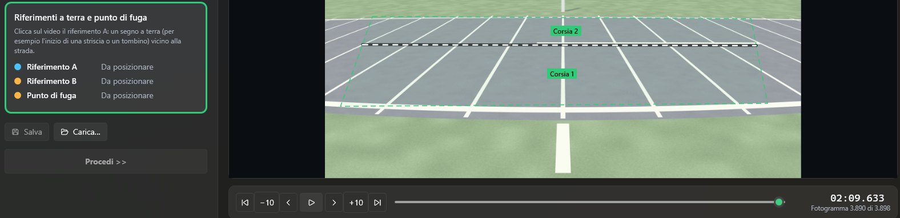
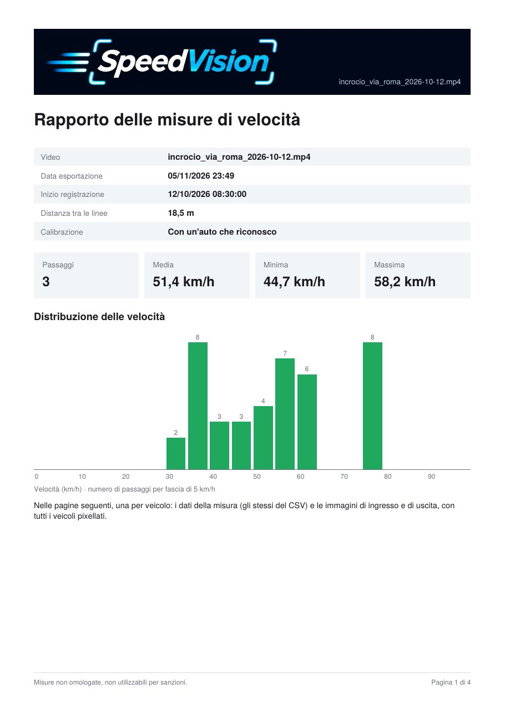

Come funzionaHow it works
Il programma ti guida un passo alla volta, nello stesso ordine della barra in alto: in ogni passo è evidenziato il riquadro su cui agire. The program guides you one step at a time, in the same order as the bar at the top: each step highlights the box to act on.
Video
Apri il video: qualsiasi formato letto da FFmpeg, anche con frame rate variabile. L'orario di inizio arriva dai metadati.
Open the video: any format FFmpeg can read, variable frame rate included. The start time comes from the metadata.
StradaRoad
Segna i quattro bordi della strada e il numero di corsie, così i risultati si possono dividere per corsia.
Mark the four edges of the road and the number of lanes, so results can be split by lane.
Analisi veicoliVehicle analysis
Il riconoscimento automatico (YOLOX) trova le auto e le segue fotogramma per fotogramma.
Automatic detection (YOLOX) finds the cars and follows them frame by frame.
CalibrazioneCalibration
Posa le linee A e B e indica quanti metri le separano: è il dato da cui dipende ogni velocità.
Place lines A and B and set how many metres apart they are: every speed depends on it.
Misura manualeManual measurement
Controlla i passaggi trovati, correggili o aggiungine a mano indicando la posizione del veicolo.
Check the detected passages, correct them or add new ones by pointing at the vehicle.
RisultatiResults
Velocità media, minima e massima, il grafico per fasce di 5 km/h e l'esportazione.
Average, minimum and maximum speed, a chart in 5 km/h bands, and the export.

Quattro modi di calibrareFour ways to calibrate
La precisione della misura dipende dalla distanza tra le linee. Scegli il metodo in base a quello che sai del luogo. Accuracy depends on the distance between the lines. Pick the method that fits what you know about the place.
Due riferimenti misurati sul campo
Two references measured on site
Il più preciso: misuri con un metro la distanza tra due segni a terra e la inserisci.
The most accurate: measure the distance between two marks on the ground with a tape and type it in.
Un'auto che riconosco
A car I recognise
Scegli il modello di un'auto che passa, o scrivi la sua lunghezza: le linee si posano ai suoi spigoli.
Pick the model of a passing car, or type its length: the lines are placed at its corners.
Due riferimenti a terra e punto di fuga
Two ground references and vanishing point
Per le riprese in prospettiva: le linee guida dal punto di fuga aiutano a orientare A e B.
For perspective shots: guide lines from the vanishing point help orient A and B.
Due riferimenti trovati sulla mappa
Two references found on the map
Ritrovi gli stessi punti sulla mappa o sulla vista satellitare e la distanza si calcola da lì.
Find the same points on the map or satellite view and the distance is computed from there.
Cosa esportiWhat you export
Una cartella per ogni esportazione, nella lingua che hai scelto: italiano, inglese, francese, tedesco o spagnolo. One folder per export, in the language you choose: Italian, English, French, German or Spanish.
Tabella CSV
CSV table
Un passaggio per riga: verso, corsia, orari di ingresso e uscita, tempo e velocità. Si apre in Excel.
One passage per row: direction, lane, entry and exit times, duration and speed. Opens in Excel.
Rapporto PDF
PDF report
Un riepilogo con il grafico, poi una pagina per veicolo con i dati e le immagini di ingresso e uscita.
A summary with the chart, then one page per vehicle with the data and the entry and exit images.
Immagini
Images
Il fotogramma di ingresso e quello di uscita con l'orario sovrimpresso, anche in versione con i veicoli pixellati.
The entry and exit frames with the time overlaid, also in a version with vehicles pixelated.

Il video non lascia il PCThe video never leaves your PC
Analisi, riconoscimento e calcolo avvengono sul tuo computer. Solo la mappa, se la usi per calibrare, si collega a internet. Analysis, detection and calculation all run on your computer. Only the map, if you use it to calibrate, goes online.
Misure non omologate
Not certified measurements
SpeedVision è uno strumento per capire il traffico, non un autovelox: le sue misure non servono per multe o sanzioni. Ogni velocità riporta la sua incertezza.
SpeedVision is a tool for understanding traffic, not a speed camera: its measurements cannot be used for fines. Every speed comes with its uncertainty.
Targhe e persone
Plates and people
Le immagini possono contenere dati personali. Per condividerle usa la versione con i veicoli pixellati e controllala prima.
Images can contain personal data. To share them, use the version with vehicles pixelated and check it first.
InstallazioneInstall
- Windows 10 o 11, 64 bit
- Windows 10 or 11, 64-bit
- FFmpeg, gratuito
- FFmpeg, free
Scarica l'ultima versione dalla pagina Releases, poi installa FFmpeg da un terminale:
Download the latest version from the Releases page, then install FFmpeg from a terminal:
winget install --id Gyan.FFmpeg -ePer provarlo subito, scarica un video dalla cartella dei video di esempio e aprilo con «Apri video». Lo stesso link è nel programma, nel pulsante «Scarica video di esempio».
To try it right away, download a video from the sample videos folder and open it with «Apri video» (Open video). The same link is in the program, on the «Download sample videos» button.
Al primo uso del riconoscimento automatico il programma scarica il modello YOLOX una sola volta.
The first time you use automatic detection, the program downloads the YOLOX model once.
Per l'uso passo per passo, i metodi di calibrazione e le domande frequenti leggi la guida nel wiki.
For step-by-step use, calibration methods and FAQ, read the guide in the wiki (in Italian).
Compilare dai sorgentiBuild from source
Serve l'SDK .NET 10.
Requires the .NET 10 SDK.
git clone https://github.com/bugeo/SpeedVision.git
cd SpeedVision
dotnet build SpeedVision.sln -c Release
dotnet test SpeedVision.sln -c ReleaseSegnalazioni e proposte sono benvenute nelle Issues.
Bug reports and suggestions are welcome in the Issues.
Ti è utile?Find it useful?
SpeedVision è gratuito e lo resterà. Se ti ha aiutato, puoi offrirmi un caffè: mi dà una mano a dedicargli altro tempo.
SpeedVision is free and will stay free. If it helped you, you can buy me a coffee: it helps me put more time into it.